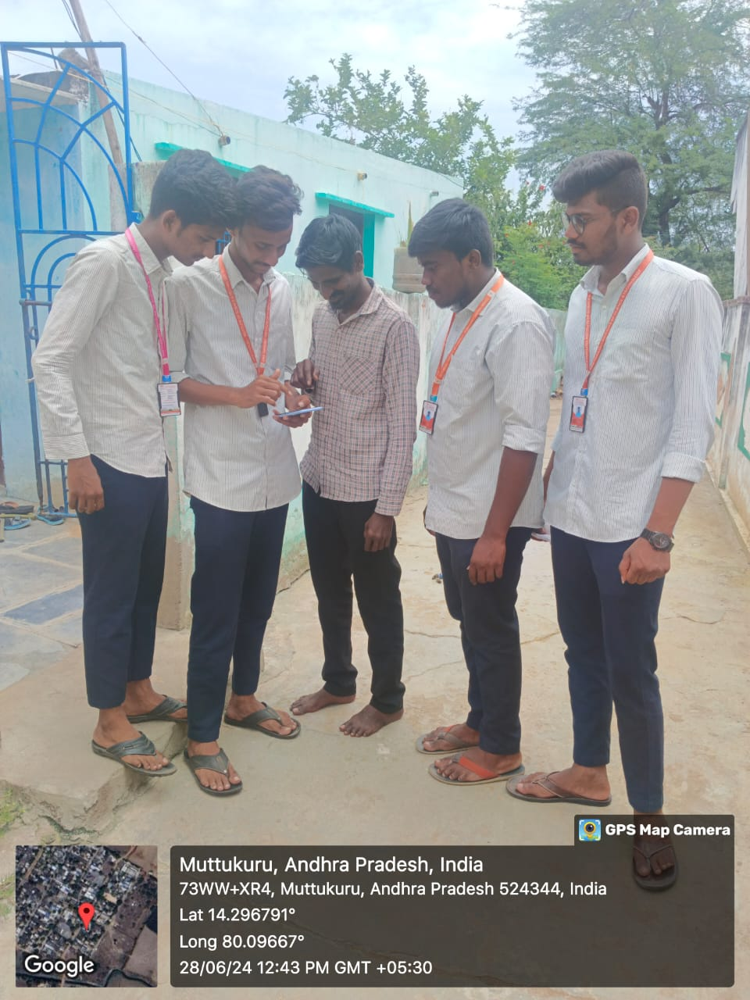
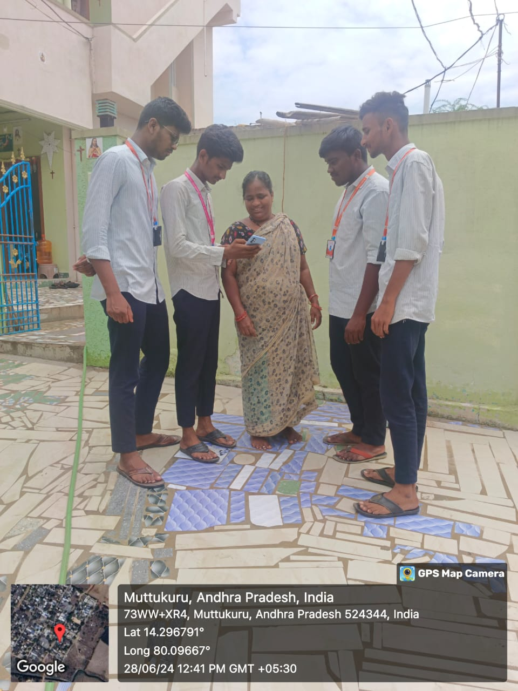
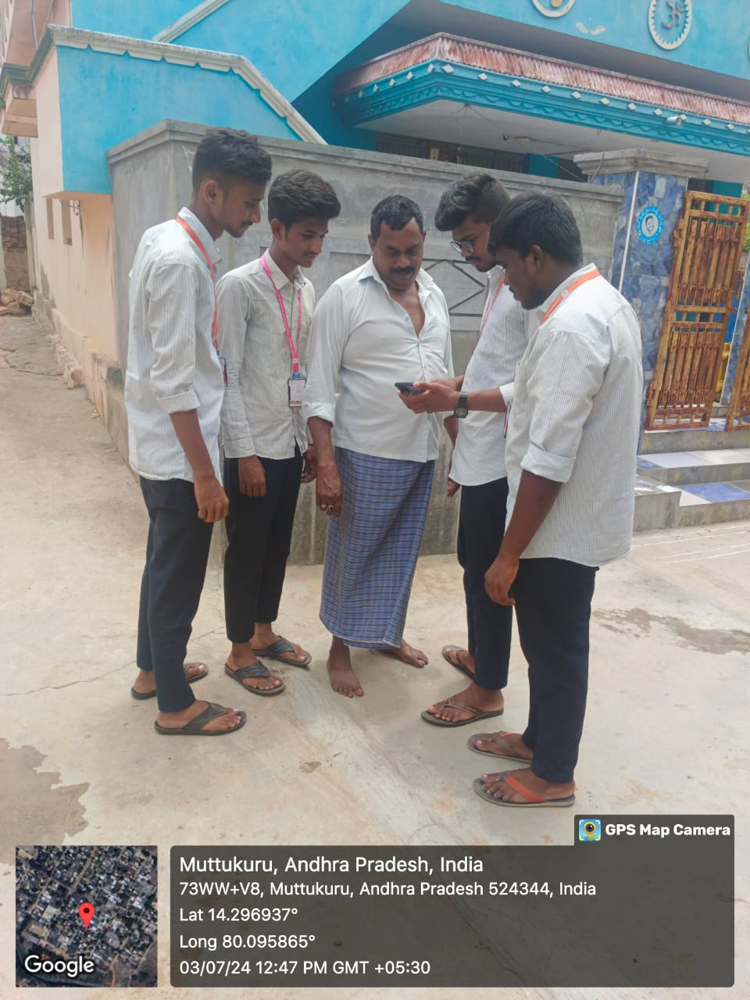
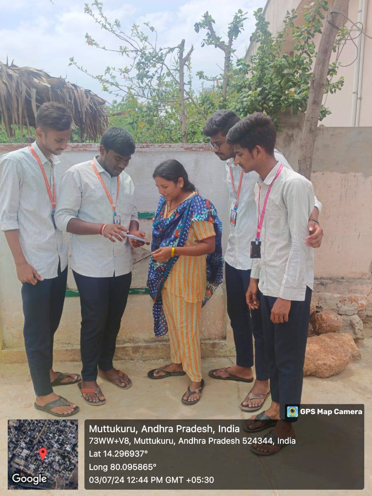

Stage-1
In the initial stage, we approached local pond owners to inquire about fish cultivation practices. We asked how they maintain the freshness of the fish and the types of chemicals they use. During our interactions, we learned that they use water conditioners to remove harmful chlorine and chloramine from the water. They also utilize pH adjusters to stabilize the water's pH levels, ammonia neutralizers to prevent toxicity, and bacterial supplements to promote a healthy aquatic environment. Additionally, they emphasized the importance of regular monitoring and testing of water quality to ensure optimal conditions for fish growth and health.
Stage-2
In the second stage of our project, we visited Krishnapatnam Port and approached the fishermen. We inquired about their methods for catching fish and how they handle the export and import processes.
The fishermen explained that they use a combination of traditional and modern techniques to catch fish, ensuring both efficiency and sustainability. Once caught, the fish are quickly transported to processing facilities where they are cleaned, sorted, and packaged. For export, the packaged fish are stored in temperature-controlled containers to maintain freshness and shipped to international markets. The import process involves receiving fish from other countries, inspecting them for quality, and distributing them to local markets.
Stage-3
In the third stage of our project, we conducted a survey in Muttukuru to assess awareness about marine products. We aimed to understand the local community's knowledge and perceptions regarding the benefits and availability of marine products.
The survey revealed varied levels of awareness among residents. While some were well-informed about the nutritional and economic benefits of marine products, others had limited knowledge. We found that many people were interested in learning more about the different types of marine products available and their health benefits. The survey also highlighted the need for better information dissemination and education to enhance the community's understanding and consumption of marine products.
Day-3 & 4



